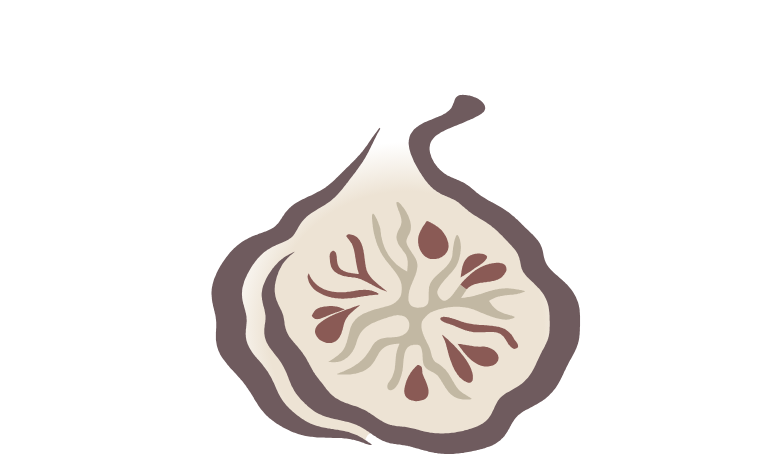

Mettez Ficolia à jour pour continuer à scanner vos produits.
[Le bouton ouvre la fiche de Ficolia dans l'App Store ou le Play Store. Écran bloquant : aucun autre accès. Dans le prototype, il mène à l'écran d'après la mise à jour.]